class: center, middle background-color: #000 # GeoFlashCards.com --- background-color: #000 # What is India's fastest growing demographic? <div align="center"> 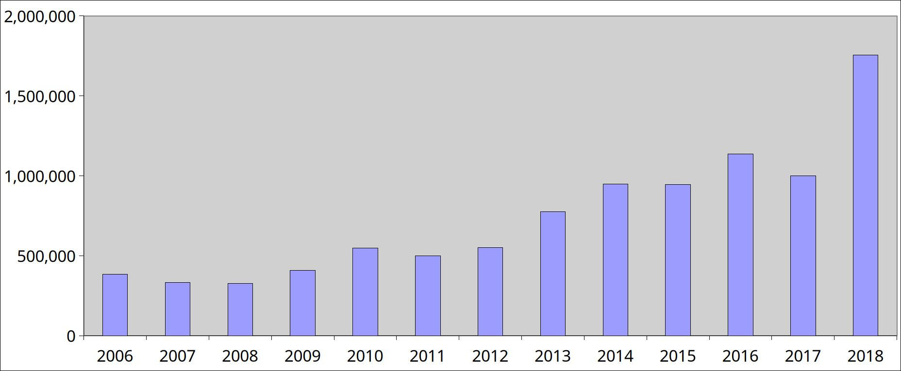 </div> #### 5.4x from 2008 to 2018 | Growing by > 18% per year | 18-35 years of age | Distributed across the country --- background-color: #000 class: center, middle # This is the demographic of competitive exam aspirants in India. ### Over ***1.5 million*** students appear for Civil Services Exam every year. ### This number is well over ***2 million*** for all state PSCs and other government exams combined. ### There is a massive overlap in the content of syllabus and nature of these exams. --- background-color: #000 ### Currently being served by websites offering package deals on static content. <div align="center"> 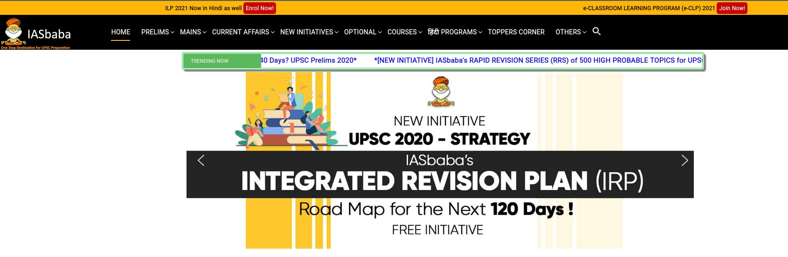 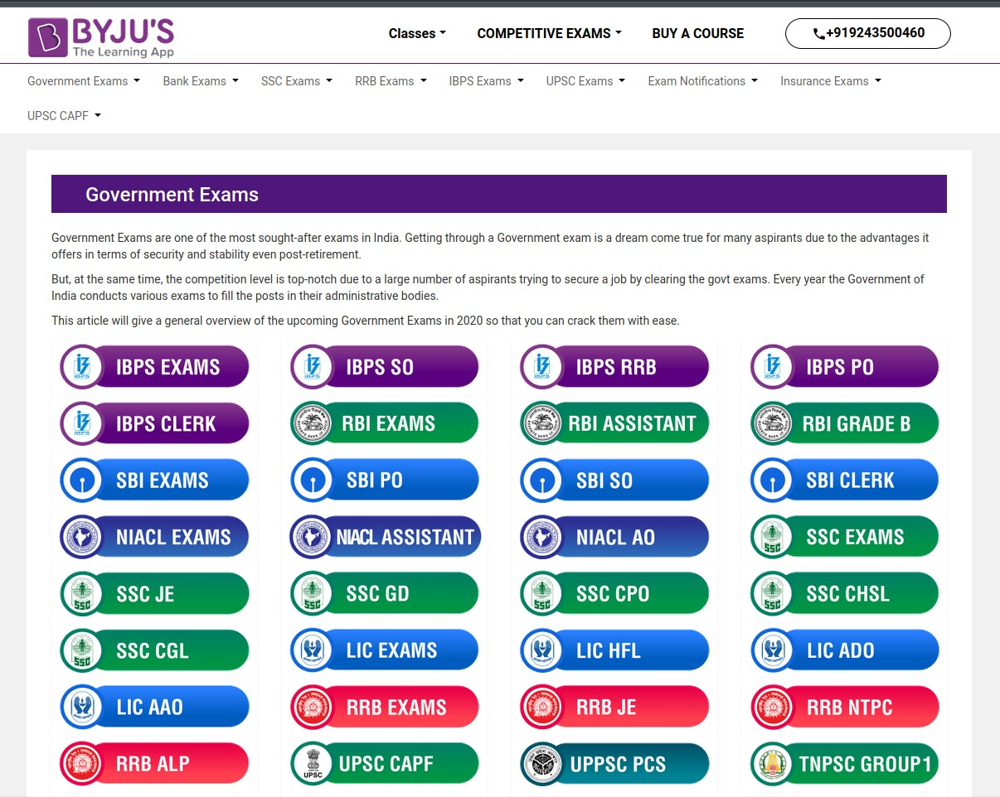 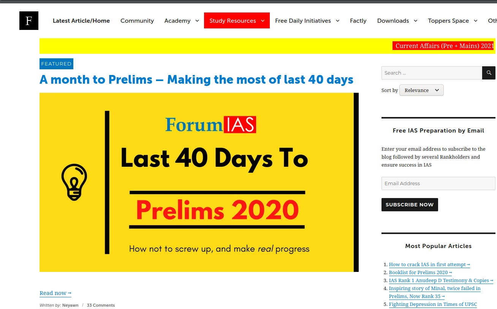 </div> - The content is bulky and not suitable for revision or spaced-repetition for memorization - Hardly any dynamic, bite-size content is being served - "Scan-and-upload" model - Scan the textbook and upload as a webpage - Zomatos of education - Zomato's business model in early days was to scan menus and upload to an app ### This mechanism ignores the whole interactive aspect of the web --- class: center background-color: #000 # However, the users are now familiar with dynamic content. ### Usage of social media has made people familiar with how to interact with responsive, auto-updating web content <div align="center"> 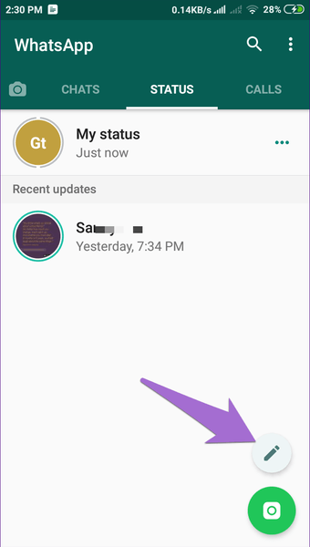 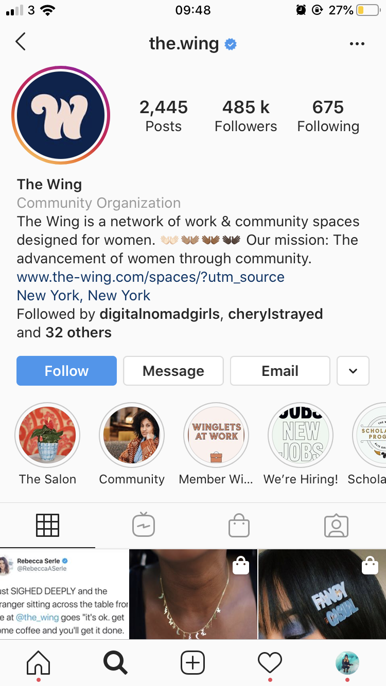 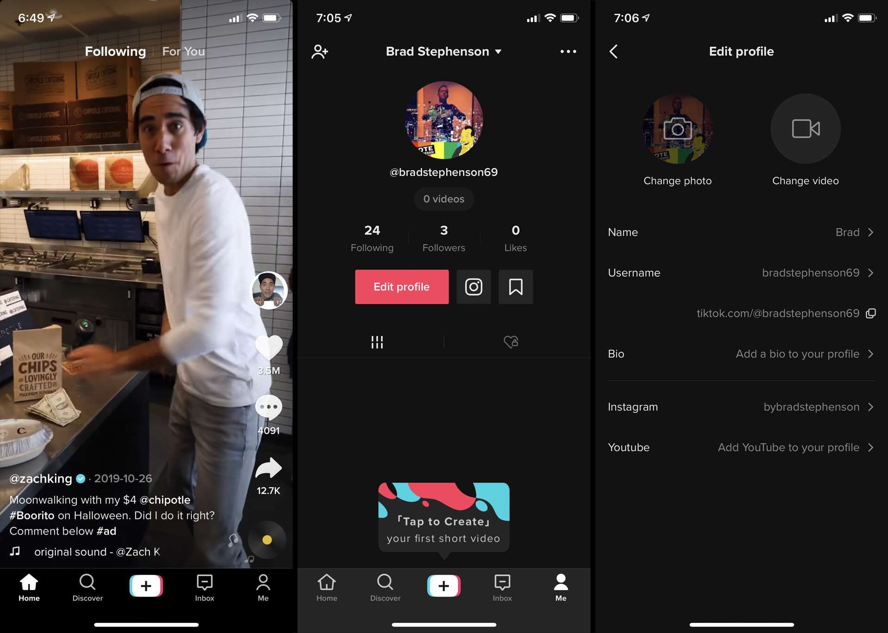 </div> --- background-color: #000 class: center, middle # It is time to deliver dynamic, responsive, auto-updating educational content. --- background-color: #000 class:center # GeoFlashCards: Delivering geography and history lessons with Dynamic Maps <div align="center"> 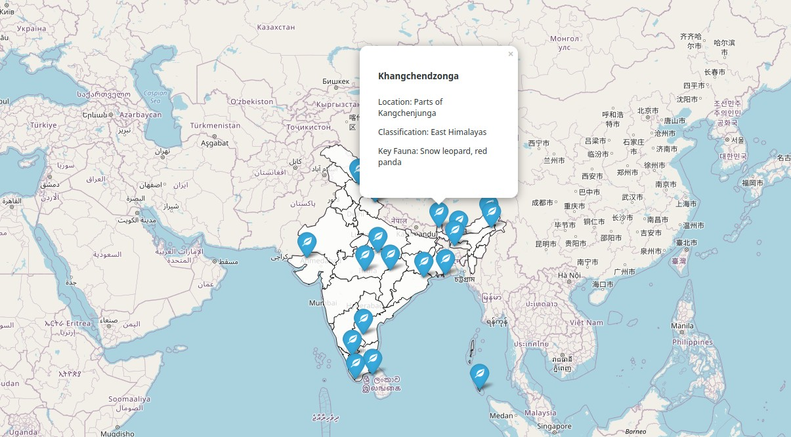 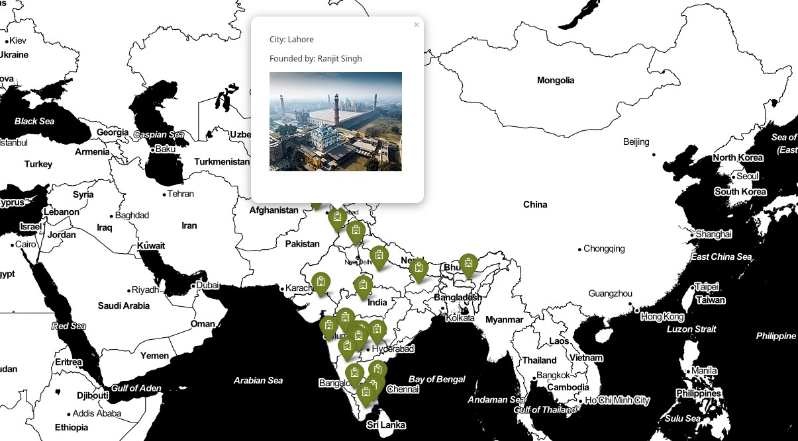 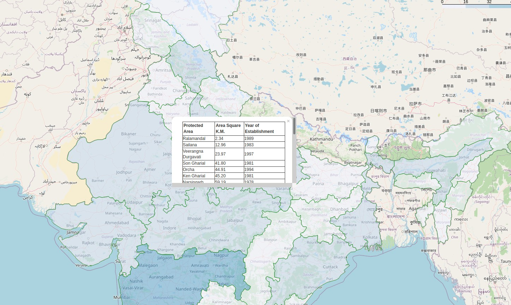 </div> --- background-color: #000 class:center ### Why Maps? #### Maps are most suitable for a mobile environment, with easy drag and touch functionality to enable popups and tooltips to deliver information ### Why flashcards? #### The card format is apt for quickly revising topics for objective-type exams that asked direct fact based questions ### Why a website and not an app? #### Nobody* installs apps anymore. A responsive and dynamic web app reduces friction of install and does not need regular updates, plus more control over the distribution of content. --- background-color: #000 class:center ## Webapp Overview <div align="center"> 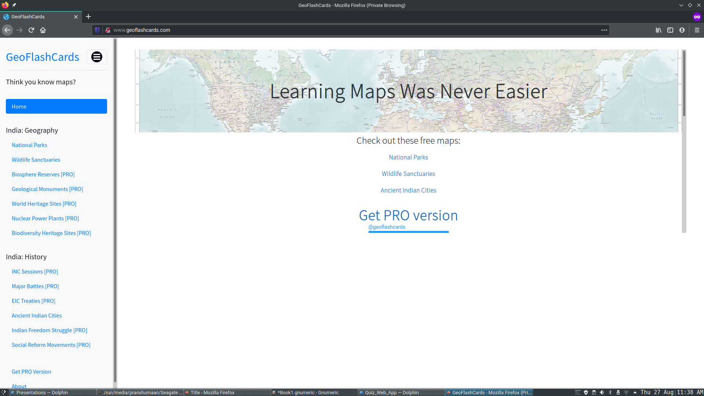 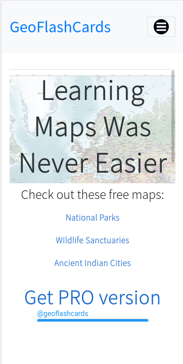 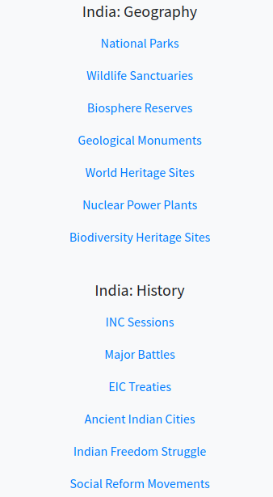 </div> <p>Fully responsive web app</p> <p>Works across all devices - mobile, desktop and tablets</p> <p>Integrated user authentication and payment gateway</p> <p>Divided into trial and PRO sections for free and paying users</p> --- background-color: #000 class:center # Initial Traction and Proof of Concept <div align="left" style="display: inline-block; margin-right: 50px"> 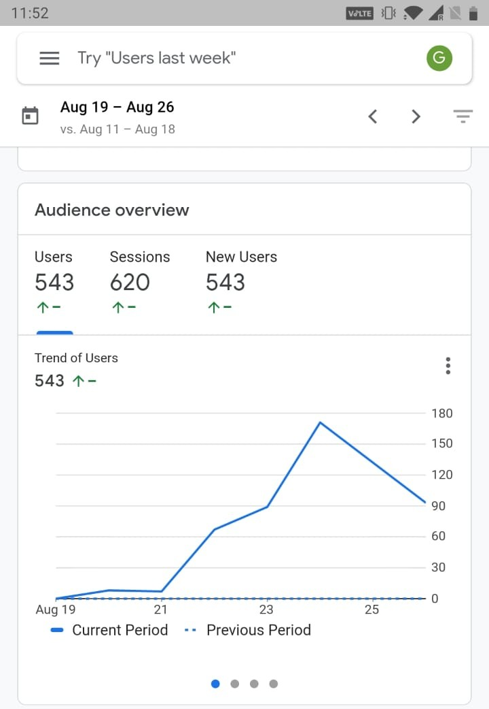 </div> <div align="right" style="display: inline-block; vertical-align: top;"> <h3>1 week since beta launch</h3> <h3>Over 500 users with over 600 sessions</h3> <h3>2 paid users acquired</h3> <h3>Created an acquisition channel via Telegram</h3> <h3>Social media presence on Facebook and Twitter</h3> </div> --- background-color: #000c class: center # The Future: Product Roadmap <div align="left" style="display: inline-block; margin-right: 50px"> <h2>Vertical Expansion</h2> <p>Add more content for competitive exam aspirants</p> <p>Create a suite of apps including: Timelines, Quizzes etc</p> <p>Partnerships with existing content providers</p> </div> <div align="left" style="display: inline-block; margin-left: 50px"> <h2>Horizontal Expansion</h2> <p>Acquisition channels in K-12</p> <p>Sub-sections to cater to smaller segments</p> <p>Add support for vernacular languages</p> </div>